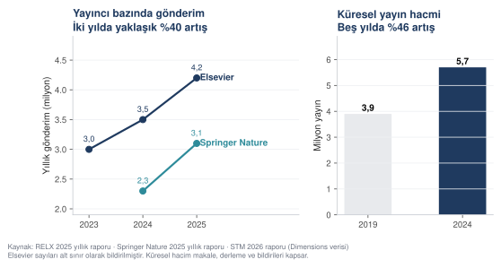
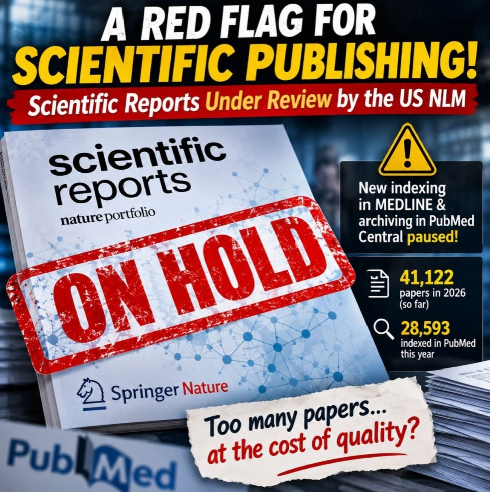
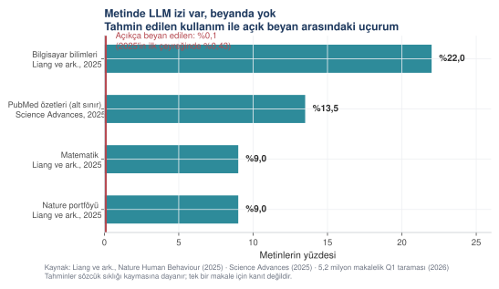
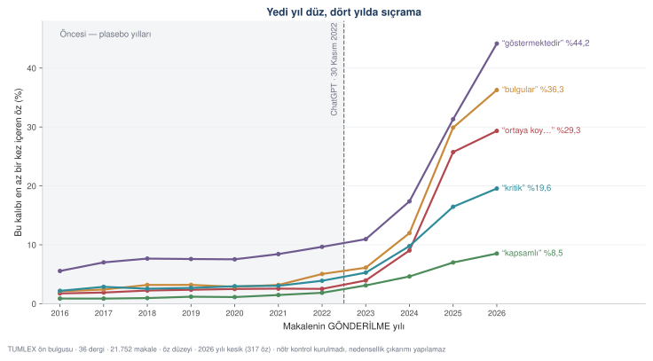
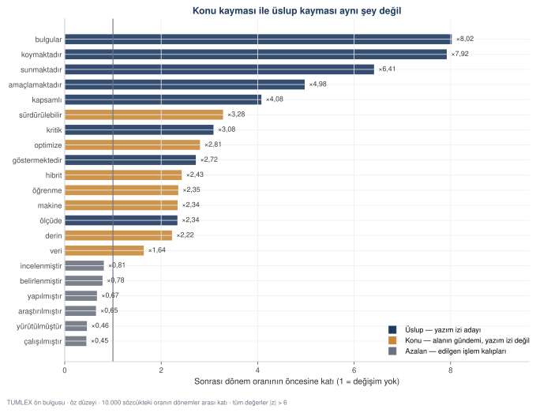
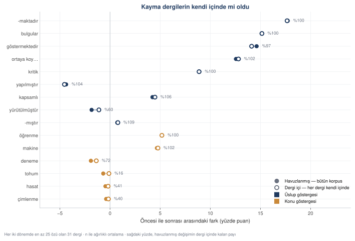

Durum raporu: yapay zekâ yayıncılığı nasıl değiştirdi
Gönderim hacmi, hakemlik kapasitesi, bütünlük taramaları, dedektörlerin dil yanlılığı ve derleme makalelerde yaşanan değişim — sayılarla ve kaynaklarıyla.
Bu kursun geri kalanı nasıl sorusunu yanıtlıyor. Bu sayfa ne oldu sorusunu yanıtlıyor: üretken yapay zekâ akademik yayıncılığa girdiğinden beri gönderim hacmi, hakemlik kapasitesi, araştırma bütünlüğü ve editoryal kararlar nasıl değişti.
Önce bir uyarı: aynı soruya üç farklı yanıt
Bu sayfayı hazırlarken üç derin araştırma raporu kullanıldı. Üçü de aynı soruyu sordu, üçü de kaynak gösterdi — ama bazı temel sayılarda birbirleriyle çelişiyorlar.
Çelişki küçük değil. Bir rapor, yüksek yapay zekâ skorlu makalelerin %95–97'sinin masa başında reddedildiğini, yalnızca %3'ünün hakeme ulaştığını ve nihai kabul oranının %0,5'in altında kaldığını yazıyor. Başka bir rapor aynı çalışmaya dayanarak bambaşka sayılar veriyor.
Kaynağa gidildiğinde durum netleşiyor:


Birincil kaynak — Organization Science'ın kendi editörlerinin yürüttüğü çalışma — şunu söylüyor: yapay zekâ skoru %70 ve üzeri olan gönderimlerin %69,6'sı masa başında reddedildi, %30,4'ü hakeme gönderildi, %3,2'si düzelt-yeniden gönder kararı aldı.
Dolaşımdaki "%3 hakeme geçiyor" ifadesi, aslında %3,2'lik düzelt-yeniden gönder oranının yanlış aktarılmış hâli. "%0,5 nihai kabul" sayısının ise doğrulanabilir bir karşılığı yok.
Gönderim hacmi: iki yılda yüzde kırk
En somut değişim gönderim sayılarında. Yayıncılar bunu kendi yıllık raporlarında bildiriyor, yani kaynak birincil.



| Yayıncı | Değişim | Kaynak |
|---|---|---|
| Elsevier | ~3,0 milyon (2023) → >3,5 milyon (2024) → >4,2 milyon (2025) | RELX 2025 yıllık raporu |
| Springer Nature | >2,3 milyon (2024) → 3,1 milyon (2025), %30'dan fazla artış | Springer Nature 2025 yıllık raporu |
| Wiley | 2025 mali yılı +%19 · 2026 mali yılı +%25 | Wiley yatırımcı açıklamaları |
| Küresel yayın | 3,9 milyon (2019) → 5,7 milyon (2024), %46 artış | STM 2026 raporu, Dimensions verisi |
PubMed'in en büyük dergisi beklemeye alındı
Scientific Reports, PubMed'de en çok makalesi indekslenen dergi. Yalnız 2026'da 41 binin üzerinde makale yayımladı. Bu hacim dikkat çekti ve ABD Ulusal Tıp Kütüphanesi dergiyi Ekim 2026'da yeniden değerlendirmeye aldı. Değerlendirme sürerken yeni makalelerin PubMed'e indekslenmesi durdu.

Durgunluk PubMed'e sorulduğunda görünüyor — "Sci Rep"[ta] AND
2026/10[dp] sorgusuyla ay ay:
| Ay (2026) | PubMed'deki kayıt |
|---|---|
| Haziran | 4.598 |
| Temmuz | 3.255 |
| Ağustos | 701 |
| Eylül | 314 |
| Ekim | 0 |
| Kasım | 0 |
Düşüş Temmuz'da başlıyor, Ekim'de tamamen kesiliyor. Daha önce indekslenmiş makaleler yerinde duruyor; duran şey yalnız yeni içeriğin alınması. NLM gerekçe açıklamadı, ortada ilan edilmiş bir bütünlük ihlali ya da geri çekme kararı yok.
Metinlerde yapay zekâ izi — ve beyanda sessizlik
Yayımlanmış metinlerde büyük dil modeli izi arayan çalışmalar birbirinden farklı oranlar buluyor. Hepsi aynı yöntemi kullanıyor: belirli sözcüklerin kullanım sıklığının yıllar içinde ne kadar kaydığını ölçüyorlar.



Asıl çarpıcı olan, çubukların yüksekliği değil kırmızı çizginin alçaklığı. 5,2 milyon makaleyi tarayan bir çalışma, 2023 sonrası yayımlanan Q1 makalelerinin yalnızca %0,1'inde açık bir yapay zekâ beyanı bulmuş. 2025'in ilk çeyreğinde bu oran %0,43'e çıkmış — yine de tahmin edilen kullanımın kırkta biri.
Peki Türkçede ne oldu
Yukarıdaki çalışmaların hepsi İngilizce literatürü ölçüyor. Türkçe tarafındaki sayılar, hâlâ süren bir çalışmanın konferansta sunulan ön bulgularından geliyor: DergiPark'taki Türkçe mühendislik makalelerinde, ChatGPT'den önce ve sonra gönderilen metinlerin karşılaştırması.
Makaleler yayım tarihine göre değil gönderilme tarihine göre ayrıldı. Yayım tarihi derginin sayı takvimidir; yazarın metni ne zaman yazdığını söylemez.
Dört bulgu
Değişen sözcük değil, dilbilgisi. Edilgen ve işlem bildiren
kalıplar azalıyor, iddia kuran kalıplar artıyor: -maktadır %59,7'den
%77,5'e, -dır %77,3'ten %88,4'e, birinci çoğul %38,8'den %49,7'ye.
Ama -mıştır yerinde duruyor (%94,4 → %95,1) — edilgen anlatı
kaybolmuyor, üstüne bir sav katmanı biniyor.
Artış yeni; süregelen bir eğilim değil. "Ortaya koy…" kalıbı 2016'dan 2022'ye yedi yıl boyunca %2 civarında durdu, sonraki dört yılda %29'a çıktı. En büyük sıçrama 2022→2023'te değil 2024→2025'te: gönderimle yayın arasında zaman var.
Konu kayması ayrı, üslup kayması ayrı. Makine, derin, hibrit, sürdürülebilir de artıyor ama bunlar alanın gündemi, yazım izi değil. Üslup tarafında kapsamlı ×4,1 ve kritik ×3,1 dikkat çekici: İngilizce yazında en çok işaret edilen comprehensive ve critical sözcüklerinin karşılıkları.
Özler %14 uzadı ama cümle sayısı değişmedi (ortanca 8). Uzama yeni cümlelerden değil, cümlelerin dolmasından geliyor.






En bariz itiraz: dergi karışımı değişmiş olabilir
Korpusun dergileri zaman içinde değişmiş olabilir; o zaman ölçülen şey yazım değil, karışımdır. Bu sınanabilir: her göstergenin her derginin kendi içindeki değişimi hesaplanır. Her iki dönemde en az 25 özü olan 31 dergide sonuç şu:
- Üslup göstergelerinin %97–106'sı dergi içinde duruyor. Kayma dergilerin kendi içinde olmuş; 2016'da ve 2025'te aynı dergiye yazanlar arasındaki fark bu.
- Dört ana göstergede istisna yok: 31 derginin 31'i aynı yöne gitmiş. Artış birkaç büyük dergiden gelmiyor.
- Ziraat sözcüklerinde tam tersi. Tohumun düşüşünün yalnız %16'sı dergi içinde kalıyor ve sayım bölünüyor (13/14). O azalma gerçekten bileşim değişimi, üslupla ilgisi yok.
- Makine öğrenmesi sözcükleri de dergi içinde %100 duruyor. Konu sözcüğü olmaya devam ediyorlar, ama aynı dergiler daha çok makine öğrenmesi yayımlıyor demek — bileşim değil.



Üç şeklin verisi ve kodu pakette: yıllık seri · sözcük seçkisi · dergi içi sınama · 29_tumlex_sekiller.py. Ön bulgu niteliğindedir, nihai sonuç olarak alıntılanamaz.
Hakemlik kapasitesi: havuz büyüdü, kabul yarıya indi
Gönderim artışının en sert yansıdığı yer hakem bulma süreci.


| Gösterge | Değişim |
|---|---|
| Hakem havuzu büyüklüğü | 2018'den beri +%54 |
| Gönderilen hakem daveti | 2018'den beri %100'den fazla artış |
| Davet kabul oranı | %43 (2018) → %22 (2024) |
| Bir kabul için gereken davet | ortalama 4,5 |
| Hakemlerin yük algısı | %50'si son üç yılda daha fazla davet aldığını bildiriyor |
Tek dergi düzeyindeki veriler aynı yöne işaret ediyor. Estuaries and Coasts dergisinde iki tamamlanmış değerlendirme almak için gereken davet sayısı 2007'de dörtken 2025'te sekize çıkmış. PRiMER dergisinde kabul oranı 2020'de %56,1 iken 2024'te %35,7'ye inmiş.
Buradaki sıkışma iki yönlü. Bir yandan yapay zekâ gönderim üretmeyi kolaylaştırıyor; öte yandan hakemler de raporlarını yapay zekâya yazdırmaya başlıyor. Organization Science, 2026 başında hakem raporlarının %30'undan fazlasında bir ölçüde yapay zekâ izi bulunduğunu bildiriyor.
Makale değirmenleri ve bütünlük taramaları
Makale değirmenleri (paper mills) yapay zekâdan önce de vardı. Yapay zekânın yaptığı, bu üretimi ucuzlatmak ve ölçeklemek oldu.
| Gösterge | Bulgu |
|---|---|
| Wiley paper-mill pilotu | ~270 dergide gönderimlerin %10–13'ü işaretlendi; ayda 600–1.000 makale hakeme gitmeden reddedildi |
| STM Integrity Hub | 35–40 yayıncı, ayda 125.000'den fazla taranan makale, ayda ~1.000 şüpheli gönderim |
| Elsevier Check Integrity | Mart 2026'da ~2.000 dergiye genişletildi |
| Hindawi krizi | 2023'te 10.000'i aşan geri çekmenin 8.000'den fazlası tek portföyden |
| Geri çekilen paper-mill makaleleri | 2024 sonuna kadar 10.409 vaka; %87,8'i Çin bağlantılı |
Bu sistemlerin ortak bir tasarım ilkesi var ve kursun geri kalanıyla doğrudan ilgili: karar vermiyorlar, sinyal üretiyorlar. Check Integrity şüpheli dosyaları insan bütünlük analistlerine yönlendirir; STM Integrity Hub yaklaşık yirmi aracın çıktısını editöre risk göstergesi olarak sunar. Hiçbiri otomatik ret vermez.
Yapay zekâ skoru editoryal kararı nasıl etkiliyor
Organization Science'ın çalışması bu konudaki en ayrıntılı kamuya açık veri. Gönderimler Pangram skoruna göre gruplanmış ve her grubun editoryal sonucu izlenmiş.


| AI skoru < %15 | AI skoru ≥ %70 | |
|---|---|---|
| Masa başında reddedildi | %43,7 | %69,6 |
| Hakeme gönderildi | %56,3 | %30,4 |
| Düzelt ve yeniden gönder | %11,9 | %3,2 |
İki okuma birden doğru. Yüksek yapay zekâ skoru ret olasılığını belirgin biçimde artırıyor. Ama yüksek skorlu gönderimlerin yine de üçte biri hakeme ulaşıyor — yani skor tek başına bir kapı değil.
Dedektörler neyi ölçüyor: yapay zekâyı mı, dili mi
Otomatik tespit araçlarının akademik kullanımındaki en ciddi sorun bu.


Üç çubuğun da insan yazısı olduğunu bir kez daha söylemek gerekiyor, çünkü mesaj buradan çıkıyor:
Ana dili İngilizce olan öğrencilerin metinlerinde dedektörler neredeyse hiç yanılmadı — yanlış işaretleme %5 dolayında.
Ana dili İngilizce olmayan yazarların TOEFL metinlerinde ortalama yanlış işaretleme %61,2. Yedi aracın en az biri, metinlerin neredeyse tamamını yapay zekâ ürünü diye işaretledi.
Aynı metinlerin sözcük dağarcığı zenginleştirildiğinde yanlış işaretleme %11,6'ya düştü. Metin değişmedi, yazar değişmedi — yalnız dil çeşitliliği arttı.
Üçüncü madde mekanizmayı açığa çıkarıyor. Bu araçların çoğu şaşırtıcılık (perplexity) ölçer: bir sonraki sözcüğün ne kadar tahmin edilebilir olduğunu. Dil modelleri en olası sözcüğü seçtiği için düşük şaşırtıcılıkla yazar. Ama ana dili İngilizce olmayan bir araştırmacı da, hata yapmamak için güvenli ve kalıplaşmış bir dil kullandığında düşük şaşırtıcılıkla yazar.
Araç ikisini ayırt edemiyor. Ölçtüğü şey yapay zekâ kullanımı değil, dilsel çeşitlilik.
Bu, Türkiye'den yayın yapan araştırmacıları doğrudan ilgilendiriyor. Türkçe ana dili olan bir araştırmacının İngilizce makalesi, tam da dedektörlerin yanlış işaretlemeye en yatkın olduğu profile uyuyor.
Derleme makaleler: en kırılgan tür
Derlemeler, metin yoğun olduğu ve yeni veri üretimi gerektirmediği için otomasyona en açık yayın türü. Nitekim bibliyometrik derleme sayısı 2020'de 1.345 iken 2024'te 6.344'e çıkmış — dört yılda yaklaşık 4,7 kat.
Prestijli dergilerin yanıtı derlemeyi yasaklamak olmadı. Yanıt, derleme üretimini davet ve ön onay süzgecine bağlamak oldu:
| Yayıncı | Uygulama |
|---|---|
| Annual Reviews | Yalnız editoryal komite daveti; davetsiz başvuru değerlendirilmiyor |
| Nature Reviews portföyü | Derlemelerin büyük bölümü ısmarlama; davetsiz öneri için önce ayrıntılı özet isteniyor |
| Uzmanlık dergileri | Giderek yaygınlaşan "davetsiz derlemeler masa başında reddedilir" kuralı |
| Sistematik derleme kabul edenler | PRISMA akış şeması, PROSPERO/OSF protokol ön kaydı, ham veri ve kod zorunluluğu |
Bu modellerin çoğu yapay zekâdan önce vardı. Ama bugün sentetik derleme dalgasına karşı yapısal bir koruma işlevi görüyorlar.
Ne bekleniyor
Aşağıdakiler mevcut verilerden yapılan ileriye dönük çıkarımlardır; ölçülmüş olgular değil, beklentilerdir.
Beklenen · yüksek olasılık
Ön eleme sertleşecek
Gönderim hacmi insan hakem kapasitesinden hızlı büyüdüğü sürece, daha az sayıda makalenin hakeme ulaşması kaçınılmaz. Bu, yapay zekâ politikasından bağımsız bir kapasite aritmetiği.
Beklenen · yüksek olasılık
Süreç kanıtı metinden önemli hâle gelecek
Metnin kendisi artık kime ait olduğunu göstermiyor. Ayırt edici olan şey ham veri, kod deposu, protokol ön kaydı, sürüm geçmişi ve defter kayıtları. Dergiler bunları giderek daha çok isteyecek.
Beklenen · orta olasılık
Beyan rejimi normalleşecek
Beyan edenin cezalandırılmadığı bir düzen kurulmazsa %0,1'lik beyan oranı yükselmez. Yayıncı rehberlerindeki "kullanım tek başına ret nedeni değildir" ilkesi bu yönde bir adım.
Belirsiz
Dedektörlerin rolü
Mevcut araçların dil kökenine göre yanıldığı ölçülmüş bir olgu. Alana özgü, şaşırtıcılığa dayanmayan modeller daha iyi sonuç veriyor ama yaygın kullanımda değil. Bu alanın nereye gideceği açık değil.
Bu sayfadan alınacaklar
Gönderim hacmi iki yılda yaklaşık %40 arttı. Yapay zekâ bu eğilimi yaratmadı, hızlandırdı.
Yayımlanmış metinlerde yapay zekâ izi yaygın; açık beyan neredeyse yok. Aradaki uçurum yaklaşık kırk kat.
Hakem daveti kabul oranı %43'ten %22'ye indi. Darboğaz burada.
Yüksek yapay zekâ skoru ret olasılığını artırıyor ama belirleyici değil — üçte biri yine de hakeme ulaşıyor.
Dedektörler yapay zekâyı değil dil çeşitliliğini ölçüyor. Ana dili İngilizce olmayan yazarlarda yanlış işaretleme %61,2.
Bütünlük tarama sistemleri karar vermiyor, sinyal üretiyor. Kararı insan veriyor.
Ve en önemlisi: bu sayfadaki sayıların bir kısmı, kaynağına gidilmeseydi yanlış olacaktı. Üç rapordan ikisi çarpıtılmış rakamları aktarmıştı.
Kaynaklar
Bu sayfa üç derin araştırma raporundan damıtıldı. Raporlar yapay zekâ araçlarıyla hazırlandı; sayılar aşağıdaki birincil ve ikincil kaynaklara kadar izlendi.
Kanıt katmanları
Birinci katman
Kurumsal ve birincil
Yayıncıların yıllık raporları ve yatırımcı açıklamaları (RELX, Springer Nature, Wiley) · COPE ve STM belgeleri · NSF/NCSES ve Clarivate istatistikleri. Bu sayfadaki hacim rakamları buradan.
İkinci katman
Hakemli araştırma
Nature Human Behaviour · Science Advances · Patterns · BMJ · PNAS · npj Digital Medicine · Organization Science editoryal çalışması. Oran ve etki tahminleri buradan.
Üçüncü katman
Uzman gazetecilik
Retraction Watch ve benzeri kaynaklar. Yayıncıların kamuya açıklamadığı operasyonel sayılar için kullanıldı; tek başına dayanak yapılmadı.
- Boyut
- Yayımlanmış çalışmalardan derlenmiş veri noktaları · her birinin kaynağı betikte
- Pakette
- 20_durum_raporu_sekilleri.py
Sayılar bu kurs için üretilmedi; yayımlanmış araştırmalardan ve kurumsal raporlardan alındı. Betiğin başındaki sözlüklerde her veri noktası kendi kaynağıyla birlikte durur, böylece bir sayıyı doğrulamak istediğinizde nereye bakacağınızı bilirsiniz.
Kullanılan başlıca çalışmalar
Organization Science (2026). More versus better: Artificial
intelligence, incentives, and the emerging crisis in peer
review [Editoryal]. Organization Science, 37(3).
https://doi.org/10.1287/orsc.2026.ed.v37.n3
Liang, W., Yuksekgonul, M., Mao, Y., Wu, E., & Zou, J. (2023).
GPT detectors are biased against non-native English writers.
Patterns, 4(7), 100779. arXiv:2304.02819
Liang, W., ve ark. (2025). Quantifying large language model usage
in scientific papers. Nature Human Behaviour.
https://doi.org/10.1038/s41562-025-02273-8
Science Advances (2025). 15,1 milyon PubMed özeti üzerinde LLM
kullanım tahmini — 2024 özetlerinin en az %13,5'i.
Siler, K. (2025). The diffusion of large language models in
published academic articles. PNAS.
https://doi.org/10.1073/pnas.2605754123
Desaire, H., ve ark. (2023). Accurately detecting AI text when
ChatGPT is told to write like a chemist. Cell Reports Physical
Science, 4(11).
BMJ (2024). 1.182 paper-mill geri çekmesinin kesitsel analizi.
RELX (2026). 2025 Annual Report. · Springer Nature (2026).
2025 Annual Report. · STM (2026). STM Global Brief.
ScholarOne / Clarivate (2026). The Future of Peer Review.
IOP Publishing (2024). State of Peer Review.
Retraction Watch (30 Ekim 2026). Scientific Reports on hold in
PubMed while NLM reevaluates journal.
https://retractionwatch.com/2026/10/30/scientific-reports-pubmed-on-hold-national-library-medicine-evaluation/
PubMed E-utilities (2 Kasım 2026). "Sci Rep"[ta] aylık kayıt
sayıları.
Akademide Üretken Yapay Zekâ — uygulamalı kurs. Hazırlayan: Dr. Mehmet Sevri, Recep Tayyip Erdoğan Üniversitesi. Bu sayfadaki bütün sayısal çıktılar, yanındaki kod ve veri dosyalarıyla yerel olarak üretilmiştir; hiçbiri elle yazılmamıştır.
Kullanılan gerçek veri setleri CC BY 4.0 ile dağıtılmaktadır ve kaynakları ilgili bölümde künyeleriyle verilmiştir. Sentetik veri kullanılan yerler açıkça işaretlenmiştir.
Buradaki istemler ve çıktılar öğretim malzemesidir. Yapay zekâ araçlarının kullanımından doğan hatalardan, uydurma kaynaklardan ve bunların yer aldığı çalışmalardan kurs ve hazırlayanı sorumlu tutulamaz; sorumluluk aracı kullanan araştırmacıya aittir. Sorumluluk ve etik beyanı · Dr. Mehmet Sevri — kişisel sayfa